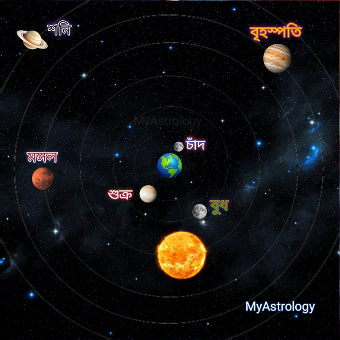

<!-- 🌟 SEO Meta Tags -->
<title>যদি পৃথিবী থেমে যেত — মহাকাশের অদ্ভুত নৃত্য | Dr. Prodyut Acharya - MyAstrology</title>
<meta name="description" content="ভাবুন তো—যদি পৃথিবী থেমে যেত? মহাকাশের গ্রহ-নক্ষত্রের দৃশ্য কেমন হত? Dr. Prodyut Acharya, Astrologer & Palmist এর ব্যাখ্যা পড়ুন।">
<meta name="keywords" content="যদি পৃথিবী থেমে যেত, মহাকাশ, Dr. Prodyut Acharya, MyAstrology, astrology in Bengali, গ্রহ নক্ষত্র, geocentric model, সূর্যসিদ্ধান্ত, আর্যভট, মহাকাশ বিজ্ঞান">
<meta name="author" content="Dr. Prodyut Acharya">

<!-- 🌌 Content Card Section -->
<section style="max-width:900px; margin:auto; background:#fff; border-radius:12px; box-shadow:0 4px 12px rgba(0,0,0,0.1); padding:20px; font-family:'Noto Serif Bengali', serif; line-height:1.8; color:#222;">

  <h1 style="text-align:center; font-size:1.8rem; color:#800000; margin-bottom:15px;">
    যদি পৃথিবী থেমে যেত — মহাকাশের অদ্ভুত নৃত্য
  </h1>

  <p style="text-align:center; font-style:italic; color:#555; margin-bottom:25px;">
    ✍ লেখক: প্রদ্যুৎ আচার্য – MyAstrology, Astrologer & Palmist
  </p>

  <h2 style="color:#444; margin-top:20px;">ভূমিকা ও কৌতূহলী প্রশ্ন</h2>
  <p>আমরা সকলেই জানি—মহাকাশে কিছুই স্থির নয়। সৌরমণ্ডল যেন এক বিশাল সঙ্গীতানুষ্ঠান, যেখানে প্রতিটি গ্রহ তার নিজস্ব ছন্দে তালে মেতে নাচছে। সূর্যকে কেন্দ্র করে পৃথিবীর অবিরাম ঘূর্ণন, চাঁদের ধীরলয়ে প্রদক্ষিণ, আর নক্ষত্রদের নীরব জ্বলজ্বলে উপস্থিতি—সবই মিলিয়ে যেন এক মহাজাগতিক কাব্য।</p>

  <p>কিন্তু ভাবুন তো—যদি একদিন এই নাট্যমঞ্চের মূলে থাকা পৃথিবীকে আমরা একেবারে থামিয়ে দিই? যদি সে আর ঘুরে না, না প্রদক্ষিণ করে? তাহলে আকাশের দৃশ্য কি আগের মতোই থাকবে, নাকি বদলে যাবে প্রতিটি গ্রহ-নক্ষত্রের নৃত্যের ধারা? এ প্রশ্ন শুধু বৈজ্ঞানিক নয়, গভীর দার্শনিকও—কারণ এতে লুকিয়ে আছে আমরা "বাস্তব" বলে যা দেখি তার আসল রূপ।</p>

  <h2 style="color:#444; margin-top:20px;">সৌরমণ্ডল ও পৃথিবী-চন্দ্র সম্পর্ক</h2>
  <p>সৌরমণ্ডলের কেন্দ্রে অবস্থান করছে সূর্য—এক দীপ্তিমান মহাশক্তির গোলক, যার মহাকর্ষে আবদ্ধ রয়েছে আটটি গ্রহ, অসংখ্য উপগ্রহ ও নক্ষত্রখচিত ধূলিকণা। পৃথিবী প্রতি বছর সূর্যের চারদিকে ঘুরে আসে প্রায় ৩৬৫ দিন ৫ ঘণ্টা ৪৮ মিনিটে—যা আমাদের "সূর্য বৎসর"। চাঁদ, আমাদের নিকটতম মহাজাগতিক সঙ্গী, পৃথিবীর চারদিকে প্রদক্ষিণ অর্থাৎ এক চক্কর দেয় প্রায় ২৭.৩ দিনে, কিন্তু পূর্ণিমা থেকে পূর্ণিমা যেতে সময় লাগে প্রায় ২৯.৫ দিন—এটাই "সিনোডিক মাস"।</p>

  <h2 style="color:#444; margin-top:20px;">যদি পৃথিবী স্থির থাকত?</h2>
  <figure style="text-align:center; margin:20px 0;">
    
    <figcaption style="color:#666; font-size:0.9rem; margin-top:8px;">পৃথিবী স্থির থাকলে আকাশের কাল্পনিক দৃশ্য</figcaption>
  </figure>

  <p>পৃথিবীকে যদি আমরা স্থির ধরি, তবে সূর্য, চাঁদ ও সমস্ত গ্রহ-নক্ষত্র যেন প্রতিদিন আকাশে তার চারপাশে ঘুরছে বলে মনে হবে। এ দৃশ্য প্রাচীন ভারতীয় জ্যোতির্বিদরা পৃথিবী-কেন্দ্রিক মডেল (Geocentric Model) দিয়ে ব্যাখ্যা করতেন। সূর্যসিদ্ধান্ত ও আর্যভটীয়-এর পাতায় আমরা পাই আকাশের এমন এক মানচিত্র, যেখানে সূর্য প্রতিদিন পূর্ব থেকে উঠে পশ্চিমে ডোবে, চাঁদ রাশিচক্রে দ্রুত ছুটে যাবে, আর মঙ্গল, বৃহস্পতি, শনি—সবাই তাদের নিজস্ব পথ ধরে ধীরে ধীরে অগ্রসর হবে।</p>

  <p>আধুনিক বিজ্ঞান আমাদের বলেছে, আসলে পৃথিবীই ঘুরছে—কিন্তু দার্শনিকভাবে দেখলে, এই পার্থক্য আমাদের শেখায় যে "দৃষ্টি" ও "বাস্তবতা" সবসময় একই নয়। আমরা যা দেখি, তা হয়তো এক ভ্রম, কিন্তু সেই ভ্রমও আমাদের চিন্তা ও কল্পনার দরজা খুলে দেয়।</p>

</section>


<!-- 🌟 SEO Meta Tags -->
<title>পৃথিবী স্থির ধরে মহাকাশের দৃশ্য — Geocentric Model, Apparent Motion ও Retrograde Motion | Dr. Prodyut Acharya - MyAstrology</title>
<meta name="description" content="পৃথিবী স্থির থাকলে আকাশ কেমন দেখাবে? Geocentric Model, Apparent Motion ও Retrograde Motion-এর বৈজ্ঞানিক ও ঐতিহাসিক ব্যাখ্যা পড়ুন Dr. Prodyut Acharya এর লেখা থেকে।">
<meta name="keywords" content="Geocentric Model, পৃথিবী স্থির, মহাকাশ বিজ্ঞান, Apparent Motion, Retrograde Motion, Epicycle, Deferent, সূর্যসিদ্ধান্ত, আর্যভট, টলেমি, Dr. Prodyut Acharya, MyAstrology">
<meta name="author" content="Dr. Prodyut Acharya">

<!-- 🌌 Main Section -->
<section style="max-width:950px; margin:auto; background:#fff; border-radius:12px; box-shadow:0 4px 12px rgba(0,0,0,0.1); padding:25px; font-family:'Noto Serif Bengali', serif; line-height:1.9; color:#222;">

  <h1 style="text-align:center; font-size:1.8rem; color:#800000; margin-bottom:15px;">
    পৃথিবী স্থির ধরে মহাকাশের দৃশ্য — Geocentric Model, Apparent Motion ও Retrograde Motion
  </h1>

  <p style="text-align:center; font-style:italic; color:#555; margin-bottom:25px;">
    ✍ লেখক: প্রদ্যুৎ আচার্য – MyAstrology, Astrologer & Palmist
  </p>

  <!-- Geocentric Model -->
  <h2 style="color:#444;">Geocentric Model-এর ধারণা</h2>
  <p>মানুষের আকাশ পর্যবেক্ষণের ইতিহাসে এক সময়ে সবচেয়ে জনপ্রিয় মডেল ছিল <strong>Geocentric Model</strong> — অর্থাৎ পৃথিবী মহাবিশ্বের কেন্দ্র, আর সূর্য, চাঁদ, গ্রহ ও নক্ষত্র সবাই পৃথিবীর চারপাশে ঘুরছে।</p>
  <p>এই ধারণা গ্রিক জ্যোতির্বিদ <strong>ক্লডিয়াস টলেমি (Claudius Ptolemy)</strong>-এর <em>Almagest</em> গ্রন্থে অত্যন্ত বিশদভাবে বর্ণিত হয়েছে। ভারতীয় জ্যোতির্বিজ্ঞানেও, বিশেষ করে <em>সূর্যসিদ্ধান্ত</em> ও <em>আর্যভটীয়</em> গ্রন্থে, পৃথিবী-কেন্দ্রিক পর্যবেক্ষণের বর্ণনা পাওয়া যায়।</p>
  <p>এই মডেলে প্রতিদিন সূর্য, চাঁদ, গ্রহ, এমনকি পুরো নক্ষত্রপটকেও মনে হয় পূর্ব থেকে পশ্চিম দিকে ঘুরছে — যা আসলে পর্যবেক্ষকের দৃষ্টিকোণ থেকে সৃষ্ট একটি ধারণা।</p>

  <!-- Apparent Motion -->
  <h2 style="color:#444;">আপাত গতি (Apparent Motion)</h2>
  <p>আমরা আকাশের দিকে তাকিয়ে যে গতি দেখি, তা আসলে <strong>আপাত গতি</strong> — বাস্তব গতি নয়, বরং পর্যবেক্ষকের দৃষ্টিকোণ থেকে দেখা গতি।</p>
  <p><strong>উদাহরণ:</strong> আপনি যদি চলন্ত গাড়িতে বসে পাশের মাঠ দেখেন, মনে হবে গাছগুলো পিছনে চলে যাচ্ছে। বাস্তবে গাছ স্থির, আপনি এগোচ্ছেন।</p>
  <p>Geocentric Model-এ ঠিক এইভাবেই মনে হয় — সূর্য, চাঁদ, গ্রহ ও নক্ষত্র সবাই আমাদের চারপাশে ঘুরছে, যদিও বাস্তবে পৃথিবী নিজেই ঘুরছে।</p>

  <!-- Retrograde Motion -->
  <h2 style="color:#444;">Retrograde Motion — গ্রহের পিছনে চলা বক্র গতি</h2>
  <p>সবচেয়ে রহস্যময় ও কৌতূহল উদ্দীপক ঘটনা হলো <strong>Retrograde Motion</strong> — যেখানে দেখা যায়, কোনো গ্রহ কিছুদিনের জন্য উল্টো দিকে চলছে। এই ঘটনা বিশেষ করে মঙ্গল, বৃহস্পতি ও শনির মতো বাইরের গ্রহের ক্ষেত্রে বেশি দেখা যায়।</p>
  <p>Geocentric Model এই ঘটনাকে ব্যাখ্যা করেছিল <strong>Epicycle</strong> (ছোট বৃত্ত) ও <strong>Deferent</strong> (বড় বৃত্ত)-এর ধারণা দিয়ে। অর্থাৎ, গ্রহ একটি বড় বৃত্ত বরাবর ঘোরার পাশাপাশি একটি ছোট বৃত্তেও ঘোরে, যার ফলে মাঝে মাঝে উল্টো দিকে চলা মনে হয়।</p>
  <p><strong>উদাহরণ:</strong> ভাবুন, আপনি দৌড় প্রতিযোগিতায় আছেন এবং পাশের লেনে ধীরে চলা একজনকে ওভারটেক করলেন। ওভারটেক করার মুহূর্তে মনে হবে — সে আপনার তুলনায় কিছুক্ষণের জন্য পিছনে যাচ্ছে। আকাশে বাইরের গ্রহদের Retrograde Motion ঠিক এরকমই দেখায়।</p>

  <!-- Diagram -->
  <figure style="text-align:center; margin:25px 0;">
    
    <figcaption style="color:#666; font-size:0.9rem; margin-top:8px;">Geocentric Model-এ Epicycle ও Retrograde Motion-এর কল্পচিত্র</figcaption>
  </figure>

  <p style="font-size:0.85rem; color:#555;"><strong>ছবির সূত্র:</strong> NASA ও ISRO-এর প্রকাশিত সৌরজগতের গ্রাফিক্স অথবা স্বতন্ত্র ইলাস্ট্রেশন।</p>

</section>
